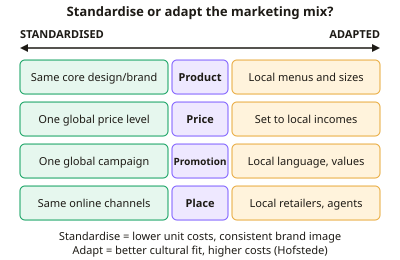

A-level Business Year 13 · Topic 11
Multinationals and global marketing
This topic focuses on multinationals and how they market their products around the world.
We look at the global marketing mix, the impact of multinationals on host and home countries, ethics in global supply chains, and how multinationals are controlled.
We finish with how firms compete in global markets.
- 6 subtopics
- 281 questions
- Free: 11.1 notes and 10 questions
In this topic
- 11.1Global marketing mix and cultural differencesFree below · 68 questions
- 11.2Impact of multinationals on host countriesOpen in Full Marks · 30 questions
- 11.3Impact of multinationals on home countries and local competitorsOpen in Full Marks · 32 questions
- 11.4Ethical issues in global operations and supply chainsOpen in Full Marks · 55 questions
- 11.5Controlling multinationals: regulation, tax and codes of conductOpen in Full Marks · 27 questions
- 11.6Global competition and competitive strategyOpen in Full Marks · 69 questions
11.1 · Free notes
Global marketing mix and cultural differences

Key points
- The global marketing mix is the 4Ps (product, price, promotion, place) applied across countries. The central decision is standardisation (one mix everywhere) versus adaptation (a different mix for each market).
- Standardisation gives economies of scale in production, R&D and advertising. It also builds a consistent global brand image and allows faster launches, but it risks ignoring local tastes.
- Adaptation (glocalisation, 'think global, act local') improves fit with local customers and can raise sales. It increases costs and loses economies of scale, so extra revenue must exceed extra cost.
- Cultural differences include language, religion, values, customs, tastes and attitudes to authority. Hofstede's dimensions are power distance, individualism v collectivism, masculinity v femininity, uncertainty avoidance, long-term orientation and indulgence.
- Product: adapt features, packaging, flavours and brand names to local norms, e.g. McDonald's offers vegetarian menus and no beef in India. Technology products such as smartphones are largely standardised.
- Price: set according to local incomes, exchange rates, tariffs, taxes and competition. Firms may use small, cheaper pack sizes (e.g. shampoo sachets) in low-income markets, or price skimming or penetration pricing.
- Promotion: language, humour, colours, symbols and celebrity choices can offend or confuse if not adapted. Advertising laws also differ, e.g. restrictions on alcohol or on advertising to children.
- Place: distribution infrastructure, retail structure and online access differ between countries. Firms use local distributors, agents, franchising or joint ventures to gain local knowledge.
- Market research (primary and secondary), local partners and PESTLE analysis help avoid costly cultural errors. Pre-launch testing reduces the risk of damage to the brand's reputation.
- Standardisation suits universal-appeal goods (technology, luxury), strong global brands and high development costs. Adaptation suits food, cultural goods and markets with differing regulations.
- Evaluation: judge by product type, market size, brand strength, cost v revenue gain and risk to reputation. Many firms use a hybrid approach: a standardised core with local adaptations. Always link the answer to the context given.
In more detail
- Standardisation example: Apple sells largely the same iPhone worldwide, with a consistent brand and adverts, gaining big economies of scale.
- Lost in translation: brand names and slogans can translate badly, so firms test them with local speakers before launching.
- Local pricing: firms often set lower prices in poorer countries, or sell smaller packs, to match local incomes.
- Promotion rules differ: some countries ban or restrict certain adverts, such as for alcohol or those aimed at children, so campaigns must be changed.
Practice
Global marketing mix and cultural differences: 10 questions
Pick an answer to check it, or open the answer for the explanation.
1. Which is the main advantage to a multinational of using a standardised global marketing mix?
- Economies of scale in production and advertising
- Lower risk of cultural misunderstanding
- Ability to charge a different price in every market
- Products perfectly matched to every local taste
Show answer
A: Economies of scale in production and advertising. Standardising spreads the fixed costs of design, production and advertising over more sales, cutting unit costs. It risks poor local fit, so the other options are disadvantages.
2. 'Glocalisation' in international marketing is best described as:
- Selling identical products worldwide without change
- Selling only through global online platforms
- A global brand strategy adapted to suit local markets
- Producing only in the firm's home country
Show answer
C: A global brand strategy adapted to suit local markets. Glocalisation combines a global brand with local adaptation of elements of the marketing mix, i.e. 'think global, act local'.
3. McDonald's sells vegetarian burgers and no beef products in India. This is an example of:
- Product adaptation to religious and cultural norms
- Price skimming
- A fully standardised product strategy
- Backward vertical integration
Show answer
A: Product adaptation to religious and cultural norms. Changing the menu to respect Hindu dietary customs is adaptation of the product element of the marketing mix to local culture.
4. Hofstede's 'power distance' dimension measures the extent to which:
- Consumers travel long distances to shop
- Less powerful members accept that power is distributed unequally
- A society prefers individual goals to group goals
- Firms are located far from their head office
Show answer
B: Less powerful members accept that power is distributed unequally. Power distance is the degree to which less powerful members of a society accept and expect unequal power. Option D describes individualism.
5. A firm runs one £8m global advert across 4 countries. Adapting it for each country would cost £3.5m per country. What is the extra cost of adaptation?
- £10.5m
- £14m
- £4.5m
- £6m
Show answer
D: £6m. Adapted cost = 4 × £3.5m = £14m. Standardised cost = £8m. Extra cost = £14m − £8m = £6m.
6. Which product is most suited to a highly standardised global marketing mix?
- Smartphone with identical design and features
- Local-language newspaper
- Traditional breakfast cereal
- Regional spice blends
Show answer
A: Smartphone with identical design and features. Technology goods have universal appeal and high development costs, so a standardised mix gives economies of scale. Food and language-based products usually need adapting.
7. A company sells shampoo in small, low-priced sachets in low-income markets. Which parts of the marketing mix are adapted?
- Place only
- Promotion only
- Product and price
- None, as it is standardised
Show answer
C: Product and price. Smaller pack sizes change the product and bring the price per purchase within local incomes, so product and price are both adapted.
8. A drawback of adapting the marketing mix for each country is that it:
- Removes the need for market research
- Always lowers brand awareness
- Increases costs and loses economies of scale
- Reduces fit with local customer needs
Show answer
C: Increases costs and loses economies of scale. Separate versions of product, promotion and pricing raise costs and reduce economies of scale. Adaptation improves, not reduces, local fit.
9. Which statement about cultural differences in international promotion is correct?
- Advertising laws are identical across countries
- Humour and symbols may confuse or offend in another culture
- Accurate translation alone guarantees the message is understood
- Colours and symbols mean the same everywhere
Show answer
B: Humour and symbols may confuse or offend in another culture. Cultural meaning of humour, colours and imagery varies, and laws differ, so campaigns often need adapting beyond translation.
10. Standardised mix: 400,000 units at £5 profit per unit. Adapted mix: 600,000 units at £4 profit per unit. How much extra profit does adaptation earn?
- £0.4m
- £0.6m
- £0.8m
- £2.4m
Show answer
A: £0.4m. Standardised: 400,000 × £5 = £2.0m. Adapted: 600,000 × £4 = £2.4m. Extra profit = £0.4m.
Keep going in Full Marks
Full Marks has 68 questions on Global marketing mix and cultural differences (58 more than here), set out in practice levels. You also get notes and 3D models for all 6 subtopics of Multinationals and global marketing, plus games, timed exams and past papers.
On your exam board
- AQATopic 3: Strategic methods: how to pursue strategies
- OCRTopic 3: The global environment
- EdexcelTopic 4.2: Global markets and business expansion, Topic 4.3: Global marketing, Topic 4.4: Global industries and companies (multinational corporations)
- CambridgeTopic 6: Business and its environment, Topic 8: Marketing